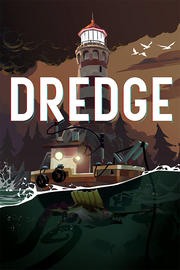

 |
|
| Tiempo de juego | No Jugado |
| Última actividad | Nunca |
| Añadido | 20/11/2025 14:16:39 |
| Modificado | 20/11/2025 14:17:07 |
| Estado de finalización | Not Played |
| Librería | Playnite |
| Fuente | 2TB GAS |
| Plataforma | Macintosh PC (Windows) |
| Fecha de lanzamiento | 30/03/2023 |
| Puntuación de la Comunidad | 94 |
| Puntuación de la Crítica | |
| Puntuación de usuario | |
| Género | Aventura Rol |
| Desarrollador | Black Salt Games |
| Editor | Team17 |
| Característica | Alternativas De Color Cloud Saves Comodidad De La Cámara Compat. Total Con Mando Controles De Volumen Personalizados Cromos De Dificultad Ajustable Logros De Opción Solo Teclado Préstamo Familiar Sonido Estéreo Un Jugador |
| Enlaces | Punto de encuentro Discusiones Guías Noticias Página de la tienda PCGamingWiki Logros |
| Tag | 3D Ambientales Aventura Buena trama Estilizados Exploración Gestión de inventario Indie Lovecraftianos Misterio Mundo abierto Navegación Pesca Psicológicos Rol Simulación Supervivencia / Terror Terror Terror psicológico Un jugador |
Ponte al mando de tu trainera de pesca y explora una colección de islas remotas y las profundidades que las rodean para ver qué yace allí debajo. Vende lo que pesques a los lugareños y completa misiones para saber más sobre el turbulento pasado de cada zona. Potencia tu barca con equipamiento mejorado y navega por tierras lejanas, pero ten en cuenta el tiempo.... puede que no te guste lo que encuentres en la oscuridad...
Lánzate al agua desde tu nuevo hogar en el remoto archipiélago The Marrows y explora las profundidades para encontrar curiosos coleccionables y más de 125 habitantes de las profundidades marinas. Explora cada zona mientras completas misiones y visitas las regiones isleñas vecinas, cada una de ellas con sus propias oportunidades, habitantes y secretos.
Alguien quiere que indagues en el pasado, pero ¿puedes confiar en esa persona? ¿Y será alguna vez suficiente?
El peligro está por todas partes, así que ten cuidado con las rocas afiladas y los arrecifes poco profundos, aunque las mayores amenazas acechan entre la niebla que cubre los mares nocturnos...
Desvela un misterio: ponte al mando de tu trainera de pesca y recorre varias islas remotas, cada una con sus propios habitantes, su fauna y sus historias por descubrir.
Ahonda en las profundidades: explora el mar en busca de tesoros ocultos y completa misiones para acceder a nuevas y extrañas habilidades.
Estudia tu embarcación: investiga el equipamiento especial y mejora las capacidades de tu barca para conseguir peces raros y valiosas curiosidades submarinas.
Pesca para sobrevivir: Vende tus descubrimientos a los lugareños para aprender más sobre cada zona, mejorar tu barco y alcanzar ubicaciones todavía más apartadas.
Lucha contra lo inimaginable: fortalece tu mente y utiliza tus capacidades para sobrevivir a las incursiones fuera del agua después del anochecer.